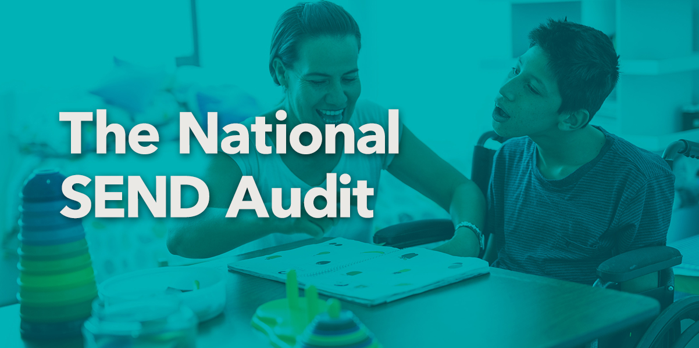

Blog
News from School Improvement Solutions about Catalyst.

The National SEND Audit
We are proud to launch the National SEND Audit today and to start the journey of SEND leaders in schools and trusts throughout the UK taking back control of the SEND agenda and building a call for change. Created by Dr Anita Devi, the National SEND Leadership audit will help to assess your setting’s strengths and areas for development across 7 key areas of SEND leadership. This is also your opportunity to contribute to national policy and get a national report on SEND Leadership across the country.

Transforming Education with Smart Auditing
"Catalyst is a new educational technology project that I am working on alongside my work at NCE, Premier Pathways and LeadershipMatters. I’ve been working on a version of Catalyst since 2015 but I really believe that it’s time has now come.
Catalyst is an educational technology endeavour with a powerful purpose." Ben Barton, 13th August 2023

It’s teachers, not government, who make the difference…
When teachers believe in their collective ability to make a difference they are more likely to feel empowered to make decisions and act upon them
School can support themselves to improve
Schools are complex organisations with multiple stakeholders and varied responsibilities. All routes to improvement can come from within.

Enabling Educators and Leaders to create agency to improve professionalisation of the sector…
Agency is central to school improvement and development of staff.